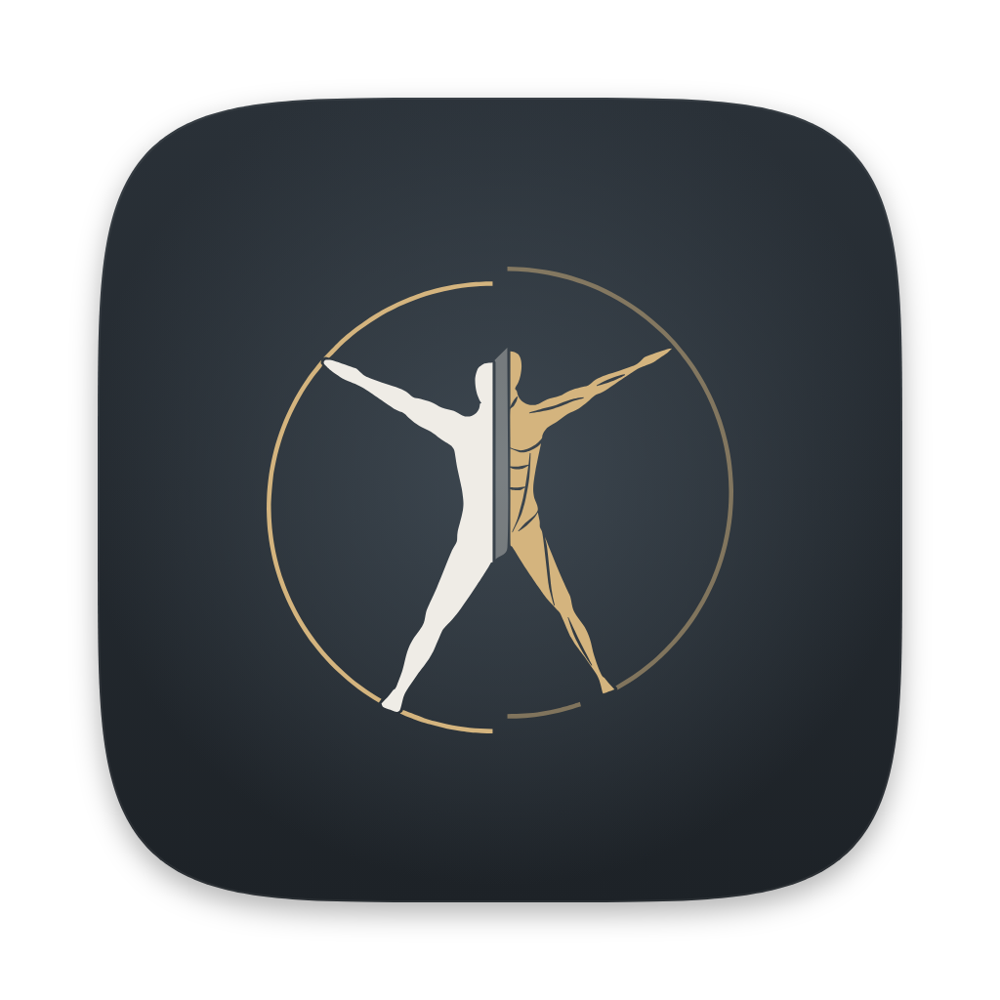

Layered Human will be Specimen
The body on display, as in a museum. The 3D model stands on a dark gallery wall under a spotlight, and everything else is lettered on the wall: titles in Literata, the interface in Fira Sans. The app and layeredhuman.com share the design.
Gallery slate is the default wall, and all six walls are dark. The label for what you select and the tool dock are lettered straight onto the wall, with no card or box. The mark is Leonardo’s figure cut down the midline.
- 6
- walls, all dark
- 9
- app screens
- 68
- app renders
- 1
- working website
- 2
- checkpoints
The mark
Leonardo’s figure in its circle, cut down the midline. One half is skin; the other is the muscle layer in brass, one step back. It is the app icon, the favicon and the lockup.

The mark is drawn again for each size, so it stays sharp: at 16 px the circle goes and the two halves touch. The files, sizes and colours are in identity/README.md.
Checkpoints
At each checkpoint you pick from three options per question, and the next round builds on your picks.
- Checkpoint 115 October 2026
Decided: the wall for the panels, Section cut down the midline for the logo, and the website’s download buttons stay as they are.
- Checkpoint 215 October 2026
Open: labels, the depth gauge and the libraries, with new rooms and states to look over. Nothing decided yet.
Every screen, every wall
Nine screens of the app in all six walls. Choose a screen and a wall, open the mockup page, or open the website in the same wall.

In the app
- The wall label. Select a structure and its name, Latin name, nerve, action, blood supply and attachments are lettered on the wall beside the body, with an accession line of TA2 IDs.
- A pool of light. A soft spotlight behind the model in every 3D view, instead of a flat backdrop.
- A dissection gauge. A vertical scale with the eight stops. The tools are a row of words under one hairline, the same in every 3D view.
- Type: Literata for titles and reading, Fira Sans for the interface.
On the website


Rooms you walk through. The first screen peels: drag the gauge beside the body and the real layers change. Each room after it has a specimen in its own pool of light with a wall label. The download desk is the last room.
Building it
The spotlight needs one change to the renderer: a soft pool of light added to the background pass that already draws the gradient.
Literata’s optical sizes need a few lines of code in Qt, not style sheets. The notes for the build are in system/BUILD-NOTES.md.
Six walls
The atlas screen on every wall. The strip under each picture shows the wall, surface, text, accent and selection colours. Select a wall to open it above.
What changes from today’s app
I reviewed today’s app screen by screen before designing: 28 findings, 8 of them major, and none that block a task. These decisions about how the app works come from that review.


The model is the brightest thing on every screen
One stage behind every workspace. Libraries, readers and image viewers sit on it, so moving between them never flashes from dark to white.
The selection names itself
Select a structure and its name, Latin name, nerve, action, blood supply and attachments appear on the wall beside it, without covering it.
The layers are on screen
Depth is always visible on the gauge, and one dock with Section, X-ray, Isolate, Hide, Measure and Labels is the same in every 3D view. Today these hide under "More tools".
Libraries by picture
Models are chosen by their render, with descriptions in the teacher's voice of the radiology notes; lessons lead with the topic, not the progress count.
Reading built for reading
Lesson text at a comfortable line length, the step's recall question in view, and the steps and finishing a lesson out in the open rather than behind "Lesson tools".
Practice says what you clicked
"Not that one: that is serratus anterior." A wrong answer names the structure you chose, so even a miss teaches something.
Films and the model, numbered alike
The radiograph and the model carry the same numbers, as today, now with the reading notes beside them and leader lines that do not cross.
Contrast checked on every wall
On all six walls the faintest text is at least 5.04:1 against its surface (WCAG AA asks for 4.5:1), body text is at least 10.8:1 and the brass at least 6.4:1.
Archive: the two directions not chosen
Overlay and Plate as they were shown on 14 October, with the side-by-side comparison and the pick I made before you chose. They are kept for the record and are not being developed. Their renders and websites still work.
Side by side
The same screen in each direction's default scheme. Choose a screen to compare; select a picture to go to that direction.

Film leaves over a quiet board, with the layers on a rail.

The body on display: a painted wall, a pool of light, a wall label.

The screen as an atlas plate: paper, ink and labels in the margins.
Overlay
Film leaves over a quiet board.
The interface is a set of milky film leaves floating over a dark, flat stage, like acetate overlays on an atlas plate. The leaves sit at the edges and the body stays in the middle. The idea people will remember is the layer rail: the dissection slider turned into the right-hand edge of the app, one tab per layer of the body.

In the app
- The layer rail. Eight tabs, one per depth band, each with a thumbnail of the body at that depth. Peeled layers step back; the current tab reads out the exact depth.
- One selection leaf. Name and Latin name, then Isolate, Hide and X-ray, then nerve, action, blood supply and attachments, with clinical notes and lessons one step away.
- Tags and one dock. Small labels with leader lines, and the same dock (Section, X-ray, Isolate, Hide, Measure, Labels) in every 3D view.
- Type: Archivo, a variable grotesque, narrowed for labels.
On the website


Peel by scrolling. The body dissects itself as you scroll, beside the app's own layer rail. Then sections, organ to cell, films beside the model, lessons, practice and the download.
Trade-offs
The closest to today's app: dark graphite by default, the cyan selection students already know, and floating bars over the 3D view, so it is the smallest change to build.
It is also the most familiar look of the three. Floating panels over a dark viewport are common in 3D tools, so the rail has to carry the identity.
Plate
The screen as an atlas plate.
Paper and ink, hairline rules, no shadows. The figure is labelled in two clean margin columns, as in a printed atlas; the selected structure is set as the plate's key; depth reads off a rule like a scale bar; and every view has a figure number and a caption. The design is the way an atlas teaches.


In the app
- Labels in the margins. Two columns, sorted by height so they never overlap, each joined to its structure by a leader line.
- The key. The selection's nerve, action, blood supply and attachments set like an atlas legend, with clinical notes and the lessons it appears in.
- A depth rule. The eight dissection stops on a horizontal scale, plus figure numbers and captions on every view.
- Type: Atkinson Hyperlegible Next and Mono, drawn for legibility.
On the website


Labels that lead. The first screen is Plate 1: each label around the figure names a structure and the feature it leads to, and selecting it scrolls to that plate.

Trade-offs
The most legible and the most purposeful: labels, key and captions are the teaching method, and they carry from the app to the website with no decoration.
Light paper by default is the biggest change from today's dark stage; Night plate and Slate night keep the same design dark. Being closest to a printed atlas, it depends on precise typography.
Their 15 colour schemes
The atlas screen in every Overlay and Plate scheme. Each direction had its own set, tuned to its type and surfaces. Select a scheme to open it in its direction above.
Overlay
8 schemes: 5 dark, 3 lightPlate
7 schemes: 5 light, 2 darkMy recommendation on 14 October, before you chose Specimen.
My pick: Plate, with Night plate for long evenings
Plate is the one where the design is the teaching method. Margin labels, the key and figure captions are how an atlas teaches, and they carry from the app to the website with nothing added for decoration. It is the most legible, its website is the strongest of the three, and Bristol and Night plate give you light and dark of the same design.
Overlay is the runner-up, and the right choice if you want the app to stay dark by default and change the least. Its layer rail is the best single new idea here, and it could move into Plate as the depth rule's big sibling.
Specimen has the most character. Choose it if you want Layered Human to feel like nothing else in anatomy software, and accept a slower, quieter mood.
To decide, tell me a direction and one or two schemes, for example "Plate: Bristol and Night plate". Next I would write the design system (tokens, type, components) and then build it into the Qt theme screen by screen.
How these were made
So you know what is real and what is still a picture.
Real renders
The anatomy is the app's own output. I ran the current build headless and rendered each figure on black and on white to recover exact transparency, once for every selection colour. Labels sit on points read from the renderer's picking buffer, so each leader line ends on the structure it names.
What is a mockup
The app screens are HTML and CSS at 1920 × 1080, not Qt. They show layout, type and colour, and nothing in them is clickable. Every screen is rendered at 1× in every scheme, the atlas at 2× in every scheme, and every screen at 2× in the default scheme: 68 renders for Specimen, 234 with the archive.
The websites
Each direction has one working page with a scheme switcher, built from a written brief and checked at desktop and phone widths. Download links point at the current GitHub release files. Copy follows the README’s facts.
Type
Archivo, Literata, Fira Sans and Atkinson Hyperlegible Next and Mono, all under the SIL Open Font License, bundled with the pages so the app can ship them too. This page is set in Schibsted Grotesk.
Images
Chest radiographs: Mikael Häggström (CC0) and Sara Nabih (CC BY-SA 4.0). Micrographs: Echinaceapallida (CC BY-SA 4.0). All via Wikimedia Commons. Anatomy: Z-Anatomy and BodyParts3D, as in the app.
Files
Everything is in the repository under docs/design/2026-10-14-layered-human/: mockups in
app/ (checkpoint 2’s options in app/specimen-<topic>/), websites in site/,
the marks and icons in identity/, colour schemes in system/, renders in renders/
(checkpoint pictures in renders/checkpoint-1/ and checkpoint-2/), the review of today’s app
and the brand brief in research/, and the tools that rebuild it all in tools/.